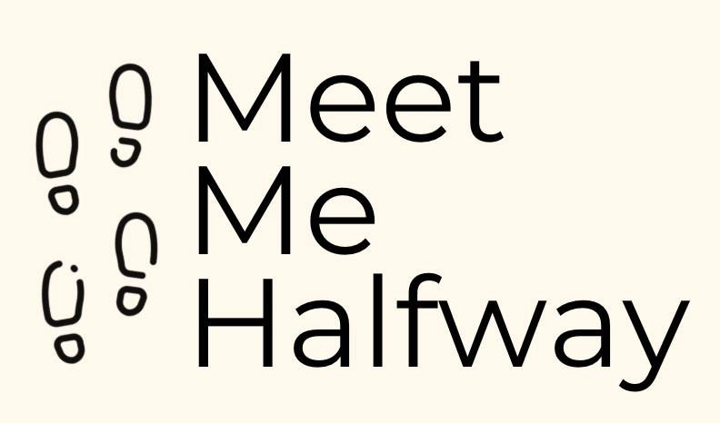

{% load socialaccount %}
{% providers_media_js %}

{% load static %}


<!DOCTYPE html>
<html>
<title>W3.CSS Template</title>
<meta charset="UTF-8">
<meta name="viewport" content="width=device-width, initial-scale=1">
<link rel="stylesheet" href="https://www.w3schools.com/w3css/4/w3.css">
<link rel="stylesheet" href="https://fonts.googleapis.com/css?family=Raleway">
<style>
body,h1,h2,h3,h4,h5,h6 {font-family: "Montserrat"}
body, html {height: 100%}
p {line-height: 2}
.bgimg, .bgimg2 {
  min-height: 100%;
  background-position: center;
  background-size: cover;
}

</style>
<body>

<!-- Header / Home-->
  <header class="w3-display-container w3-wide bgimg w3-margin-top" id="Home">
    <p></p>
    <p></p>
    <div class="w3-center">
      
    </div>
    <title>Meet Me Halfway</title>
    <meta charset="UTF-8">
    <meta name="viewport" content="width=device-width, initial-scale=1">
    <link rel="stylesheet" href="https://www.w3schools.com/w3css/4/w3.css">
    <link rel="stylesheet" href="https://fonts.googleapis.com/css?family=Montserrat">
    <link rel="stylesheet" href="https://cdnjs.cloudflare.com/ajax/libs/font-awesome/4.7.0/css/font-awesome.min.css">
    <style>
    body,h1 {font-family: "Montserrat"}
    img {margin-bottom: -7px}
    .w3-row-padding img {margin-bottom: 12px}

          /* add appropriate colors to fb, twitter and google buttons */
      .fb {
        background-color: #3B5998;
        color: white;
      }
    </style>
    <body>
    
    <!-- !PAGE CONTENT! -->
    <div class="w3-content" style="max-width:1500px">
    
    <!-- Header -->
    <div class="w3-opacity w3-margin-top">
    <div class="w3-clear w3-padding-30"></div>
    <header class="w3-center w3-margin-bottom">
      <h1><b>MEET ME HALFWAY.</b></h1>
      <p><b>Onto your next adventure!</b></p>

      <div class="container">
        <form action="/action_page.php">
          <div class="row">
            <div class="col">
              <a href= "{% provider_login_url "facebook" method="oauth2" %}" class="fb btn" style="text-align:center">
                <i class="fa fa-facebook fa-fw" style="text-align:center"></i><p>Login with Facebook</p>
               </a>
            </div>          
          </div>
        </form>
      </div>
      <p class="w3-padding-16"></p>
    </header>
    </div>
    
    <!-- Photo Grid -->
    <div class="w3-row" id="myGrid" style="margin-bottom:128px">
      <div class="w3-third">
        
        
      </div>
    
      <div class="w3-third">
        
        
        
      </div>
    
      <div class="w3-third">
        
        
      </div>
    </div>
    
  <!-- End Page Content -->
  </div>
</header>

  <br>


  <script>
  // Accordion
  
  function myFunction(id) {
    var x = document.getElementById(id);
    if (x.className.indexOf("w3-show") == -1) {
      x.className += " w3-show";
      x.previousElementSibling.className += " w3-theme-d1";
    } else { 
      x.className = x.className.replace("w3-show", "");
      x.previousElementSibling.className = 
      x.previousElementSibling.className.replace(" w3-theme-d1", "");
    }
  }
  </script>
  </body>
</div>


</body>
</html>
